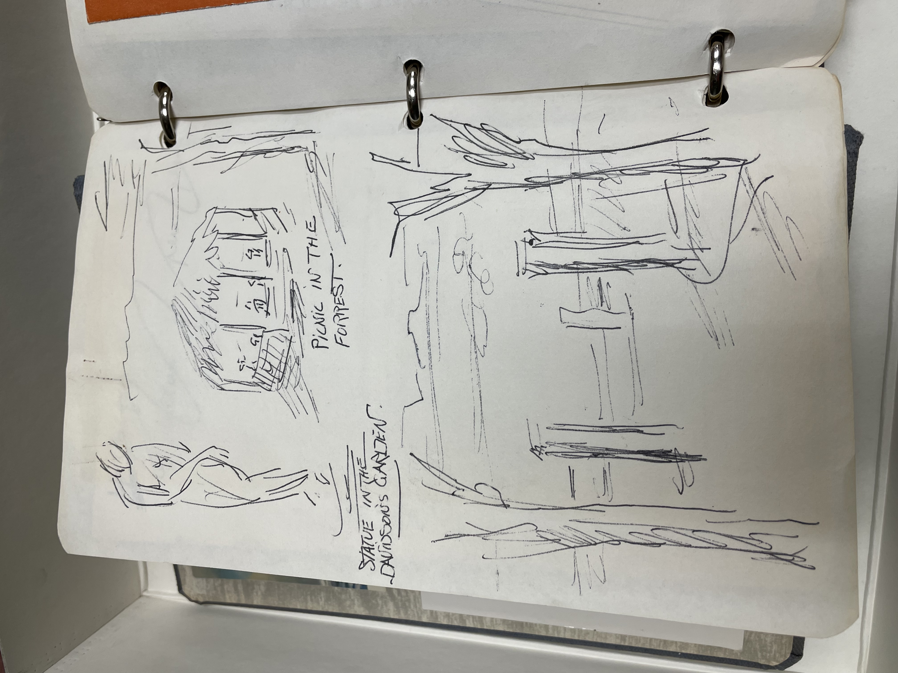

FIRST IMAGE TRANSCRIPT: "Paris July 19th. Took a motor from travel agency-after breakfast in our fancy round sitting room. Drove all around Paris the driver named Harvey had a daughter named at Waycross Georgia. Went to Lubin's for perfrume (had the pink flannel affairvthat Harriet had given me- REsented') W alked around the circle- Place de Vandome to Caron, The Ritz Hotel, and a jewellers where I was intregued by a Jewelled bird. But did NOT get it! To a very nice resturant in the Bois for lunch Le Pre Catalan. Went then to both sides of the Sien and got some little prints of Paris. R.R. station and Tourist Agencyreg. tickets. We had our evening meal at the Bristol and then set out for the Casion deParis. Very amusing show- we stayed thro' half of it but felt we needed sleep. Gail got a cab by her shrill whistle!"
SECOND IMAGE TRANSCRIPT: "STATUE IN THE DAVIDSON'S GARDEN, PICNIC IN THE FORREST."
THIRD IMAGE TRANSCRIPT: "July 26, 1955 Brussles - Dear People: We are just about to take off for Copenhagen and are sit-ting around so I will try to send this second intallement of our trip report. If I remember correctly, the last letter came from the boat. We arrived in Cherbourg and got safely on the train to find that it was over 90. We nearly died on the ride to Paris. Very unairconditioned train and blazing sun. The first thing we did when we arrived at Le Bristol was fall in a cold tub. WE went out for dinner later and cele-brated with Cherrie Jubilee. Very Tasty! The next day Mrs. Behrend hired a car and guide and we drove all over Paris. It is so beautiful but so expensive? $90 a minute to breath! We did a bit of shopping, had lunch in the Bois de Boulougne shopped on the Left Bank, got train tickets and that night went to the Casino de Paris. Pretty naked ladies I must say. We were not carried away by it but see it, so that is that. The next morning we were up at the crack of dawn and off to Tours. the man and his wife who ran the Manior Bercheron, where we stayed as a member of the family were terribly nice. We arrived in time for lunch and got in a little car and went through some beautiful country to see some of the chateaux. We enjoyed it tremendously. You can see where all the old French painters got all their inspirations. Lovely rivers, old mills and beautiful trees. That night after dinner we went to a nearby chateau, Azay-le-Rideau which was illuminated. Just like fairyland. They also had a sort of play very cleverly done just done with voices and lighting which told the history of the building. We will never forget it. Thursday, the Davidsons, our hosts and their little boy and ourselves went on another chateaux trip which was just a grand as the day before. We had a picnic on the way and tea on the way home. Great fun. The only thing that marred the trip was another guest who arrived who knew all about everything and told it in the loudest of voices. I got in a ter-rible row with him about sports. Everyone was on my side but you couldn't get a word in edge wise. It was was rather funny to look back on but I nearly had a nervous breakdown when it was going on. Friday we left Tours at about eleven and got back in Paris for lunch. After the lovely meal we charged out on foot to do some shopping.
FOURTH IMAGE TRANSCRIPT: "AZAY-LE-RIDEAU" *pictured above* (commune in France.)